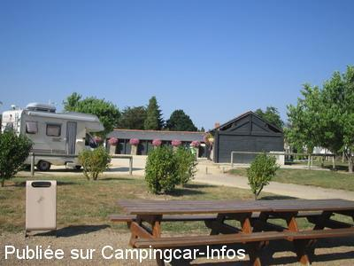
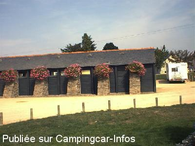

ASN = Aire de services avec stationnement nuit possible de :
BOURGNEUF EN RETZ
(N° 166)
Accès/adresse :
Route de Boin/ rue de la Taillée D758
44580 BOURGNEUF EN RETZ
44580 BOURGNEUF EN RETZ
Latitude : (Nord) 47.04125° Décimaux ou 47° 2′ 28′′
Longitude : (Ouest) -1.95569° Décimaux ou -1° 57′ 20′′
Tarif : Gratuit
Type de borne : Autre
Services :


Autres informations :
Ouvert toute l'année.

Le 22/12/2011 par ballesteros

Le 13/09/2006 par vagabond57
de
barbiche
le 07/08/2015 :
tous le parking a été refait avec beaucoup moins de place.Nous n'irons plus dommage pour les commerces qui étaient très sympathiques.C'est maintenant un parking spécial covoiturage avec quelques places de camping car
tous le parking a été refait avec beaucoup moins de place.Nous n'irons plus dommage pour les commerces qui étaient très sympathiques.C'est maintenant un parking spécial covoiturage avec quelques places de camping car
de
THUET Michel
le 14/05/2013 :
Halte sympathique début mai et pas trop bruyante malgré la proximité de la route. Par contre il est déconseillé de prendre de l'eau propre dans La mesure ou il n'y a qu'un seul robinet. J'ai vu un camping-cariste qui n'a pas hésité à mettre le robinet dans le bec verseur de sa cassette WC alors qu'il est si simple de maintenir le bec à distance et faire couler l'eau.
Mirol49
Halte sympathique début mai et pas trop bruyante malgré la proximité de la route. Par contre il est déconseillé de prendre de l'eau propre dans La mesure ou il n'y a qu'un seul robinet. J'ai vu un camping-cariste qui n'a pas hésité à mettre le robinet dans le bec verseur de sa cassette WC alors qu'il est si simple de maintenir le bec à distance et faire couler l'eau.
Mirol49
de
nenettemamita
le 23/08/2011 :
Toujours aussi belle cette aire, nous y sommes passés en Juillet !
Toujours aussi belle cette aire, nous y sommes passés en Juillet !
de
chrisvero
le 15/01/2011 :
Le restaurant à 100 métres est très conseillé très bon rapport qualité /prix .Ca change des pizzas et restos sans un vrai cuisinier.
Super
Le restaurant à 100 métres est très conseillé très bon rapport qualité /prix .Ca change des pizzas et restos sans un vrai cuisinier.
Super
de
René T.
le 10/10/2010 :
Impeccable malgré proximité de la route. Bravo à la commune. Remerciez en fréquentant les commerces. Une excellente adresse tout près (qualité et prix) : resto la Bourrine.
Impeccable malgré proximité de la route. Bravo à la commune. Remerciez en fréquentant les commerces. Une excellente adresse tout près (qualité et prix) : resto la Bourrine.
de
Brams
le 19/10/2009 :
Tout est gratuit. Bonne adresse.
Tout est gratuit. Bonne adresse.
de
ménin gérard
le 09/09/2009 :
Il y a des WC publics avec lavabo, très propres.
Il y a des WC publics avec lavabo, très propres.
de
Gagcbr
le 15/07/2009 :
De passage pour vidanger, aire agréable, goudronnée et services GRATUITS, à signaler à proximité du littoral, merci à la commune
De passage pour vidanger, aire agréable, goudronnée et services GRATUITS, à signaler à proximité du littoral, merci à la commune
de
nadine et thierry
le 06/03/2008 :
Aire de service impeccable et en plus très bon resto/pizza "Le Caraibes" en centre ville.
Aire de service impeccable et en plus très bon resto/pizza "Le Caraibes" en centre ville.
de
stephane
le 04/01/2008 :
De passage pour vidanger, le paking a entièrement été refait et goudronné. C'est impeccable!
De passage pour vidanger, le paking a entièrement été refait et goudronné. C'est impeccable!
de
Nenettemamita
le 29/08/2007 :
Nous y avons passé une nuit en juillet 2007. Bel endroit mais un peu bruyant, peut-être dû à la période estivale; commerces à proximité; place pour 18 camping-cars avec toilettes et aires pour tous services.
Nous y avons passé une nuit en juillet 2007. Bel endroit mais un peu bruyant, peut-être dû à la période estivale; commerces à proximité; place pour 18 camping-cars avec toilettes et aires pour tous services.
de
Vagabond57
le 13/09/2006 :
De passage début septembre 06. Très bon accueil du personnel de l'O.T. Parking poussièreux et bruyant dù au passage proche de la circulation. Visite intéressante du Bourg ainsi que les marais salants (réservations)
De passage début septembre 06. Très bon accueil du personnel de l'O.T. Parking poussièreux et bruyant dù au passage proche de la circulation. Visite intéressante du Bourg ainsi que les marais salants (réservations)